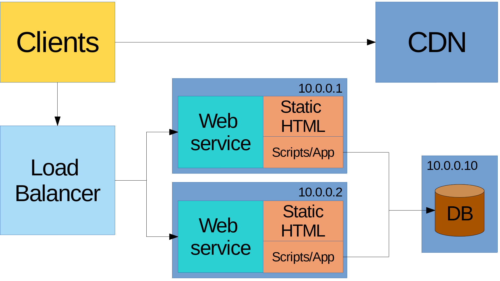
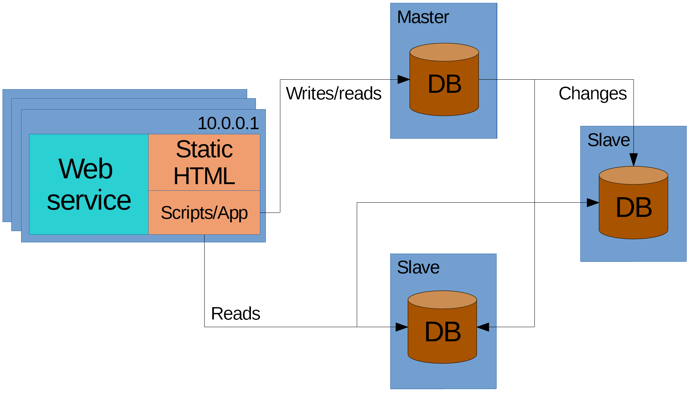
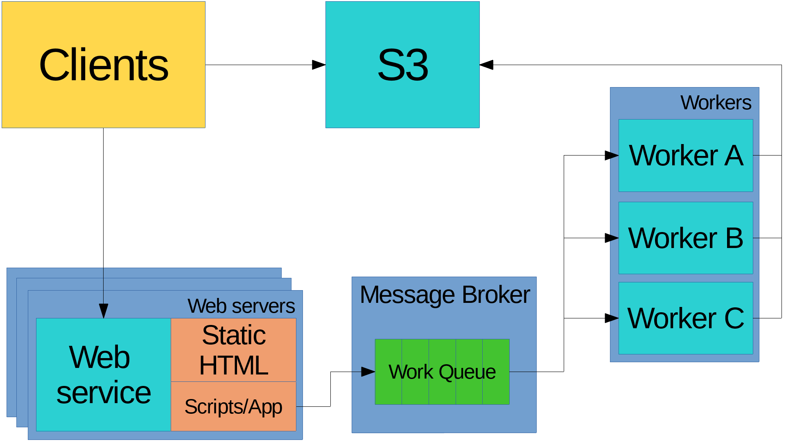

class: middle, center # Modern Web Services ## How we serve up our content --- class: middle # About me * Software engineer / Full-stack developer * ryanrolds@gmail.com * https://github.com/ryanrolds --- class: middle # Transparency * This talk was going to be 2 hours * And about much more boring stuff --- class: middle, center # Questions? Comments? Raise your hand. --- class: middle # Overview * Use a broad definition of content * Software commonly found in web services * Common patterns when solving scaling issues --- <img src="images/single_server.png"/> --- class: middle # And this works, but... * What happens with 100/1k/10k active users * Other business units start wanting reports, notifications, etc... --- class: middle # Common problems * Too much load (CPU) * Not enough memory (RAM) * Input/Output and disk space * Network speed and latency * Computers/applications crash - fault tolerance --- class: middle # What can we do? * Scale vertically (larger server) * Scale horizontally (more servers) * Optimize our site --- <img src="images/cdn.png"/> --- <img src="images/db_server.png"/> ---  ---  --- <img src="images/read_write_api.png"/> --- class: middle # Background processing * Report generation * Importing/exporting data * Other resource intensive tasks ---  --- class: middle # What next? Try setting these services. Lots of great information here: https://github.com/donnemartin/system-design-primer --- class: middle, center # Thanks AWS Services and Serverless Resources Friday, April 28, 2017 @ 6:30PM